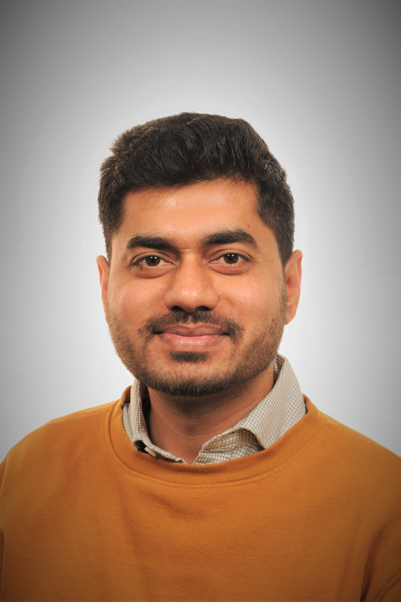
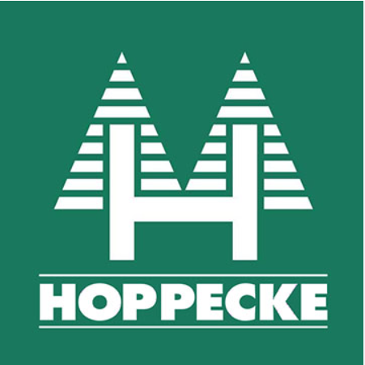
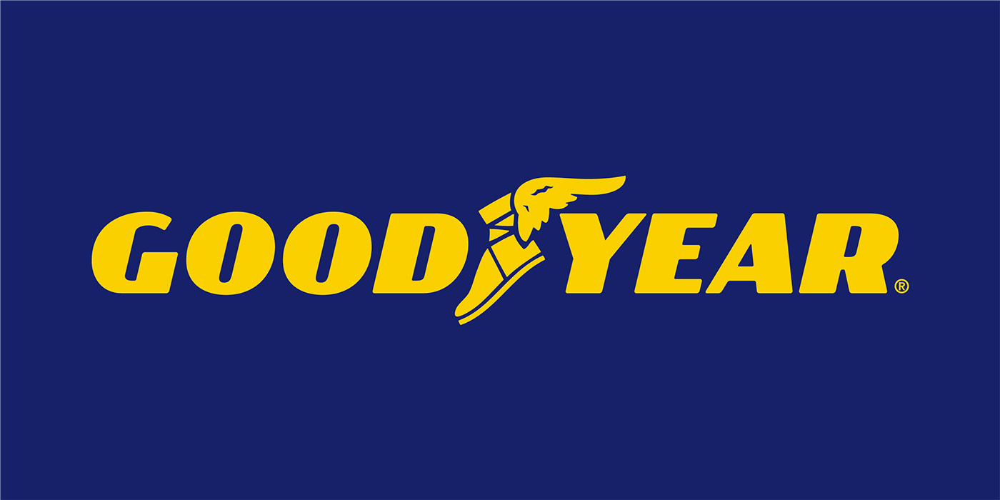
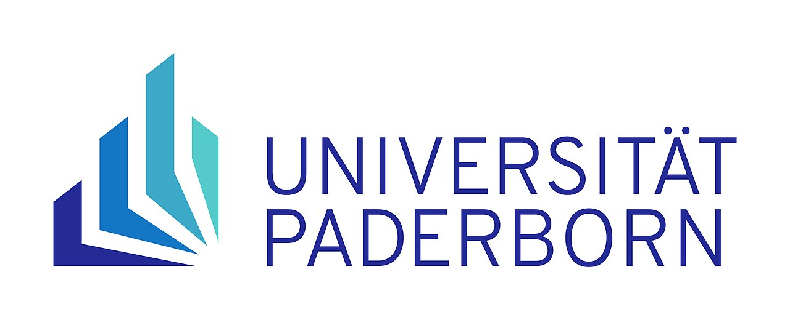
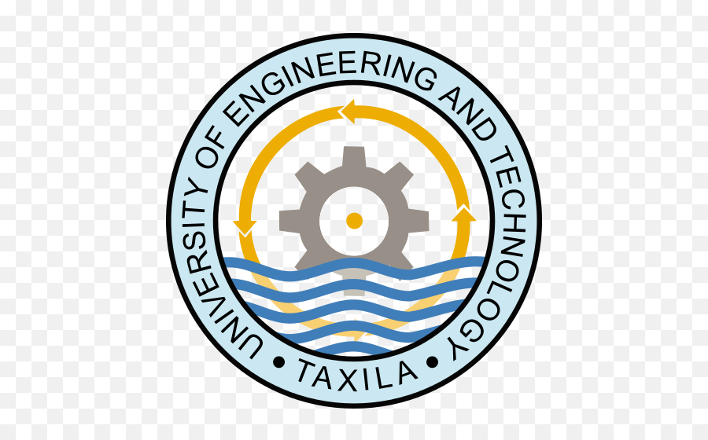
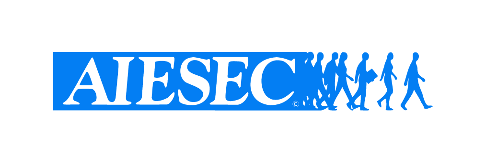

Embedded Problem Solver
Welcome! I'm an Embedded Systems Engineer with expertise in control, embedded software, and deep reinforcement learning, focused on transferring algorithms from simulation to real-world robotic systems.
I combine practical laboratory engineering expertise with advanced computational simulation frameworks to deliver robust, deployment-ready hardware controls.

HOPPECKE Batterien GmbH & Co. KG

The Goodyear Tire & Rubber Company (Colmar Berg, Luxembourg)
PTML Ufone (Islamabad, Pakistan)
PTML Ufone (Islamabad, Pakistan)
Trained CrazyFlie agents using Isaac Lab and RSL_RL, achieving a 70% improvement in task success rates through optimized PPO algorithms. Designed complex reward structures and domain randomization protocols to bridge the sim-to-real gap, and engineered custom Python pipelines (NumPy/Seaborn) to validate multi-seed training logs.
Solved 4-class real-time stress detection tracking by capturing biometrics using EEG & ECG devices. Developed deep learning CNN architectures alongside Random Forest classification frameworks to achieve a 76% testing accuracy score.
Designed a custom interface board to scale and safely isolate microcontroller relays with a Raspberry Pi system. Integrated environmental sensor arrays, including passive infrared (PIR) motion detectors and temperature elements across SPI, UART, and I2C hardware buses.
Developed an automated vehicular tracking and smart parsing framework to handle license detection parameters and digital identification protocols.

Universität Paderborn (Paderborn University)
Specialization: Power Electronics & Control Engineering (S&IP)

University of Engineering and Technology, Taxila
GPA: 3.07 / 4.0

AIESEC in Germany (Social Services)
AIESEC in Germany (Education)
Consulted and mentored six VPs in my role as an NSB Consultant, guiding them to achieve their LC goals for the term. Provided strategic support, fostered integrity, and implemented effective team routines to drive performance and leadership development.
AIESEC in Germany (Social Services)
Responsible for members and smooth delivery of exchange experiences, also reporting to VP function.
AIESEC in Germany (Social Services)
I am assisting the outgoing global volunteers in finding a suitable project to have a cross-cultural experience. Enable them to have a fantastic experience during the project abroad. Responsible for smooth delivery at every step.